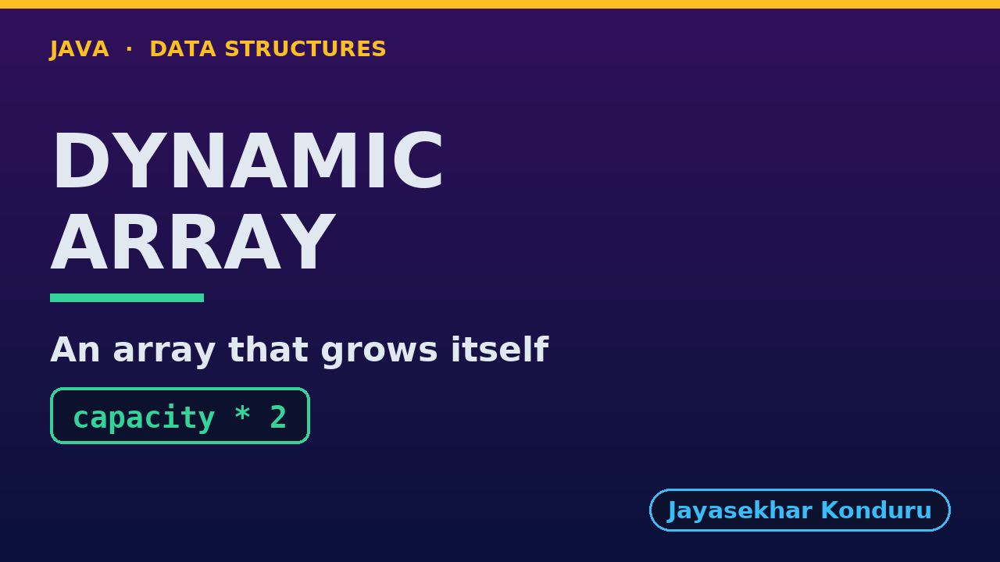

YouTube — Dynamic Array
Everything needed to publish video/dynamic-array-explained.mp4. Copy the fields straight out of this file.
Chapter timings come from the video's .srt; they are regenerated whenever the video is rebuilt.
Title
Dynamic Array in Java - How ArrayList Grows43 characters (YouTube shows about 60 before cutting a title off in search).
Description
The first two lines are what a viewer sees above the fold, so they carry the hook rather than the boilerplate.
Dynamic Array in Java, explained with a music playlist that grows as songs are added. We start with a fixed array of four songs and see a fifth song fail, then count what growing one place at a time would cost: 499,494 copies for 1,000 songs. Then we build the fix by hand: an array with spare capacity, and when it is full, a new array twice as big with every song copied across. We count the real steps, 1,020 copies for 1,000 songs, about one per song, then insertAt and deleteAt in the middle, find that a spare place is not an element, and see the capacity halve when deletions leave it a quarter full. We finish with the bill: up to half the places unused, and one slow append now and then.
CHAPTERS
00:00 Introduction
00:49 The Everyday Idea
01:22 Two Numbers To Keep Apart
01:47 Act One — A playlist in a fixed array
02:16 A playlist in a fixed array
02:56 Act Two — Size and capacity
03:20 Size and capacity
03:52 Act Three — Full? Double it
04:18 Full? Double it
05:09 Act Four — The middle, and the spare places
05:32 The middle, and the spare places
06:13 Act Five — The bill
06:50 The bill
07:09 Time and Space Complexity
07:45 Common Mistakes
08:15 When To Use It
08:48 Thanks for Watching
SOURCE CODE, WRITTEN NOTES AND AN INTERACTIVE ANIMATION
https://github.com/jk-boot-up/datastructures/tree/main/gradle-java/arrays-and-lists/dynamic-array
WHAT YOU NEED FIRST
Java basics: variables, loops, classes and methods. No data-structures knowledge is assumed; START-HERE.md in the repository explains memory, references and counting steps.Chapters
YouTube shows these as chapters because there are at least three and the first is at 00:00.
00:00 Introduction
00:49 The Everyday Idea
01:22 Two Numbers To Keep Apart
01:47 Act One — A playlist in a fixed array
02:16 A playlist in a fixed array
02:56 Act Two — Size and capacity
03:20 Size and capacity
03:52 Act Three — Full? Double it
04:18 Full? Double it
05:09 Act Four — The middle, and the spare places
05:32 The middle, and the spare places
06:13 Act Five — The bill
06:50 The bill
07:09 Time and Space Complexity
07:45 Common Mistakes
08:15 When To Use It
08:48 Thanks for WatchingTags
dynamic array, arraylist, resizable array, amortized, capacity vs size, data structures, java data structures, java, java 25, algorithms, computer science, programming tutorial, beginner, big o193 characters, under YouTube's 500 limit.
Thumbnail

Upload docs/thumbnail.png (1280×720) under Details → Thumbnail → Upload file. It is made for the small size YouTube shows in search: the name, one line of promise and one piece of code.
Upload checklist
- [ ] Upload
video/dynamic-array-explained.mp4(1080p, H.264, 30 fps, AAC 48 kHz) - [ ] Set the video language to English, then add subtitles: Upload file → With timing →
video/dynamic-array-explained.srt - [ ] Upload
docs/thumbnail.pngas the thumbnail - [ ] Paste the title, description and tags from above
- [ ] Add to the Data Structures in Java playlist
- [ ] Wait for 1080p processing before sharing the link
Runtime
09:31.